Ponente por confirmar
Finanzas personales
Ponente por confirmar
Administra, genera y ahorra dinero de forma inteligente. Su trasfondo se anunciará pronto.

FortalecidosPor la AdversidadImágenes reales de labores de rescate. Compartidas con respeto por quienes ayudan.
Evento solidario en vivo · Este sábado
24 conferencias en 12 horas continuas sobre finanzas, mentalidad, persuasión y espiritualidad. Un día completo para recaudar fondos para las familias afectadas por el terremoto en Venezuela y los rescatistas que trabajan por ellas.
Tu lugar es gratis. Durante el evento podrás donar lo que tu corazón te indique a cambio de quedarte con las 24 grabaciones. El 100% va a la causa.
La causa va adelante, pero lo que aprendes es real. Esto es lo que recibe cada persona que se registra.
¿Qué vas a aprender?
Ocho grandes áreas de vida, trabajadas por mentores invitados durante las 24 conferencias. Estamos confirmando a cada uno.
Administra, genera y ahorra dinero de forma inteligente. Su trasfondo se anunciará pronto.
Cómo sostener una actitud fuerte cuando la vida golpea fuerte. Su trasfondo se anunciará pronto.
Negocia y comunica tus ideas con más impacto. Su trasfondo se anunciará pronto.
Herramientas para expandir y fortalecer tu vida espiritual. Su trasfondo se anunciará pronto.
Optimiza tu tiempo y tu dinero usando IA en tu día a día. Su trasfondo se anunciará pronto.
Crea una marca que crezca y tenga impacto masivo. Su trasfondo se anunciará pronto.
Y mucho, mucho más durante las 24 conferencias.
No te quedes fuera
Únete el sábado a 12 horas de aprendizaje con un propósito: apoyar a Venezuela.
Sin costo, sin trampa, sin letra pequeña. Solo usamos tu nombre y correo para enviarte el acceso.